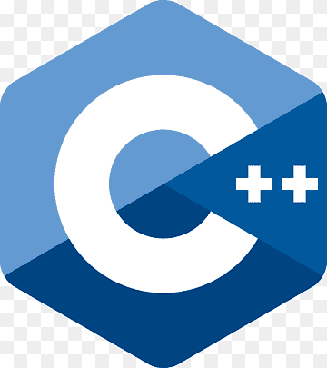

|
Lenguaje |
Utilización |
 |
C |
He utilizado el lenguaje C para una investigación personal en manipulación de memoria. |
|  |
C++ |
Participación en concursos como ICPC, IEEExtreme y programación orientada a objetos. |
 |
Java |
Programación Orientada a Objetos, pantallas interactivas y conexión y consultas SQL con un servidor montado localmente. |
 |
Python 3.7 |
Participación en concurso IEEExtreme. |
 |
Ruby |
Implementación del algoritmo KNN con normalización de datos y consulta recibida por consola de un usuario. |
  |
Git/Github |
Repositorio realizado para realización de clases y para archivos de práctica de páginas como Codeforces. |
  |
HTML/CSS |
Realización de páginas web y ciertas animaciones en css. |
 |
SQL |
Desarrollo de una base de datos y servidor montado localmente, a través de Oracle y realización de consultas a través de sentencias SQL. |